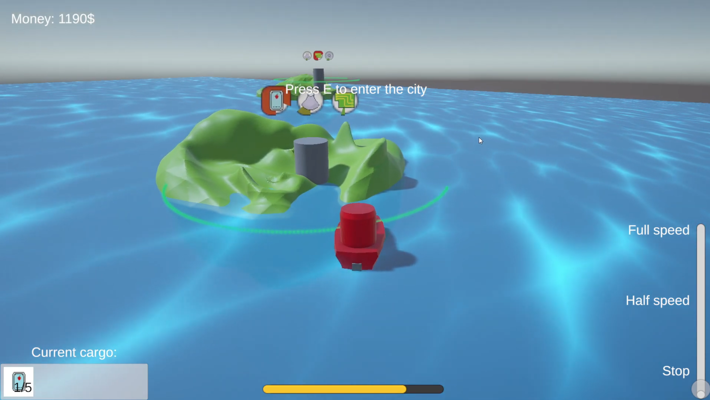

Game / Ludum Dare 53
Little Boat Delivery Adventures
Trade goods between islands to pay off your little red boat’s debt.

About the game
In Little Boat Delivery Adventures, you are the captain of a small red boat trying to pay off your debt. Sail between islands, find the best deals, and deliver goods to whichever city will pay the most for them.